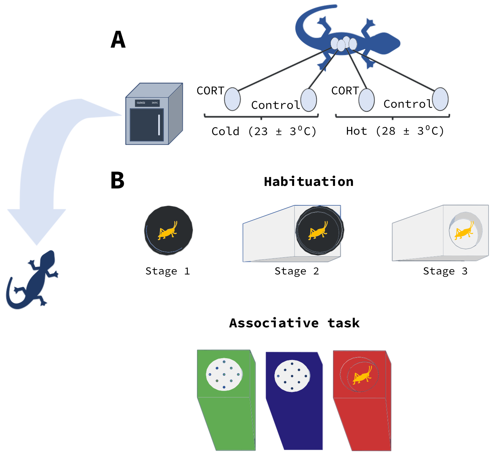

Introduction
Cognition is defined as the processes by which animals gather, preserve, and use information from their environment through perception, learning, memory, and decision making ((shettleworth_2009?)). These mechanisms underpin several aspects of animals’ ecology such as habitat selection, foraging decisions, mate choice, antipredatory strategies, and/or social behaviours that are crucial for survival and reproduction (Dukas (2004)). Particularly, learning - the acquisition of neuronal representations of new information (Dukas (2004)) - is seen as fundamental for coping with environmental changes by allowing individuals to create new associations between events (Dukas (2004); Leal and Powell (2012); Buchanan, Grindstaff, and Pravosudov (2013)). However, the ability of organisms to acquire new information varies accross individuals, with this natural variation usually being influenced by factors like age, sex, social system, gut microbiota, or the environment where animals develop (REFS). In this regard, the latter can be particularly relevant because the brain is especially sensitive to environmental impacts during early stages of development (Zhu et al. (2004)). These differences in neural development caused by early environment can have long-lasting effects on learning skills, and prenatal Glucocorticoids (GCs) and prenatal thermal environment are known to play a prominent role in shaping learning abilities in different taxa (see Lemaire et al. (2000); Zhu et al. (2004); Joshua J. Amiel and Shine (2012); Joshua Johnstone Amiel, Lindström, and Shine (2014); Crino, Driscoll, and Breuner (2014); Abayarathna and Webb (2020)). GCs - hormones related to organisms’ response to changes in homeostasis (BEST DEF AND REF) - can have sustained pysiological effects on neural structure and physiology associated with animals’ performance on learning tasks (Definition and REF). In this sense, there is evidence that high prenatal GC levels impair with learning accross different taxa (MORE EG.S AND REFS; Lemaire et al. (2000); Zhu et al. (2004)), but results vary depending on sex, or task (REFS). Also, some studies have revealed effects of prenatal temperature on learning in ectotherms (REFS). For instance, … (REFS). In this vein, the effect of prenatal temperature has been associated with similar changes in neural structure and metabolic activity (REFS). However, despite both prenatal GCs and thermal environment are known to affect learning through similar mechanisms, the interaction between this two factors is still poorly understood. In this study, we aim to explore the interactive effects between prenatal Glucocorticoids (GCs) and the prenatal thermal environment on learning using two species of skinks, the delicate skink (Lampropholis delicata) and the common garden skink (L. guichenoti), as our model species. We experimentally increased Corticosterone (CORT) - the main GC in reptiles - levels in the eggs of these two species of skinks and then incubated them at two different temperatures in a 2X2 factorial design. Then, we subjected the juveniles to a colour-associative and a reversal task to explore their learning abilities. We hypothesise that changes in CORT levels and temperature during early development will have sustained effects on brain’s morphology and physiology that will ultimately impact learning skills. We predicted that individuals exposed to high levels of CORT and/or low temperatures will perform worse in the learning tasks than control individuals or individuals exposed to high temperatures. We also expected incubation at high temperatures to decrease the impact of CORT on skink’s performance, while cold incubation temperatures were expected to increase CORT detrimental effects on learning.
Cognition it is affected by the conditions in which organisms develop (Burger, 1991; Lemaire et al., 2000; Amiel and Shine, 2012; Amiel et al., 2014; Abayarathna and Webb, 2020).
Methods
Subjects
L. guichenoti and L. delicata are small (∼35–55 mm snout-vent length (SVL)), oviparous, and generalist skinks that usually share the same habitat in suburban areas throughout south-eastern Australia ((Chapple, Simmonds, and Wong 2011)). They also have similar breeding periods, but with some differences in reproductive output: while L. delicata lays 1 to 6 eggs in only one clutch per season, L. guichenoti clutches are smaller (1-5 eggs per clutch) but they usually lay two clutches per season ((Chapple, Simmonds, and Wong 2011); (Chapple et al. 2014)).
Husbandry
Breeding colony – We tested juveniles coming from a breeding colony established in the lab since 2019. There is a total of 270 and 180 adults of L. delicata and L. guichenoti respectively, housed in big containers (41.5 L x 30.5 W x 21 H cm) with six lizards (2 males and 4 females) per enclosure. Enclosures are provided with non-stick matting, shelter, and several small water dishes. Water is given daily, and they are fed approx. 40 mid-size crickets (Acheta domestica) per enclosure three days a week. Crickets are dusted with calcium weekly and multivitamin and calcium biweekly. To ensure a temperature gradient, we employ a heat chord and a heat lamp following a 12 h light:12 h dark cycle. Room temperatures are set to 22-24 Celsius, and warm side of enclosures is usually at 32 Celsius.
Eggs collection and incubation – Between mid-October 2022 to the end of February 2023, we provided females with a place to lay the eggs by means of small boxes (12.5 L x 8.3 W x 5 H cm) with moist vermiculite inside, that were placed in one extreme of the communal enclosures (see above). We checked for the presence of eggs in the boxes three days a week. After collection, we measured length and width of eggs with a digital caliper to the nearest 0.1 mm and weight them with a (OHAUS, Model spx123) digital scale ± 0.001g error. Then eggs were treated with CORT or vehicle (see CORT and Temperature manipulation below) and were placed in individual cups (80 mL) with moist vermiculite (12 parts water to 4 parts vermiculite). The cups were covered with cling wrap to retain moisture and left in LATWIT 2X5D-R1160 incubators at two different temperatures (see CORT and Temperature manipulation below) until hatching.
Hatchlings – Eggs in the incubator were checked three times a week for hatchlings. After hatchling, we measured juveniles’ SVL and Tail Length (TL) with a rule to the nearest mm and weighted them with a (OHAUS, Model spx123) digital scale ± 0.001g error. We then placed hatchlings in individual enclosures (18.7L x 13.2W x 6.3H cm) and provided them with non-stick matting and a small water dish. During this period, they were sprayed water every day and received 3-6 small A. domestica crickets three times a week. All care otherwise follows similar protocols to adults (see above).
Two weeks before we started the training phase (see below), lizards were moved to the experimental arena (Fig. 1c) for acclimatation. The arenas were individual medium size (41 L x 29.7 W x 22 H cm) plastic containers with a shelter (9 L x 6 W x 1.5 H cm) on one of the extremes and a water dish on the other. These new enclosures were placed in two rooms in 7 different racks associated to 7 different CCTV systems (device model DVR-HP210475) that allowed us to record their behaviour during the experiment (see details below). The number of lizards per species and treatment in each rack was counterbalanced to control for any effect of the room or the position of the lizard in the rack. During acclimatation and all the experiment, lizards were fed with only one cricket per day dusted with calcium and multivitamin (see protocol below), and water was supplied ad libitum. We provided a temperature gradient by means of a heat cord and heat lamps in a 12 h light: 12 h dark cycle. The rooms temperature was set to between 22-24 Celsius. We tested temperatures with laser temperature guns to ensure such a set up established a thermal gradient and we there were no significant differences between treatments or species (see Supplementary Material).
CORT and Temperature manipulation
To test empirically the effect of early environment we manipulated CORT concentration in eggs and incubated them under one of two temperature regimes (‘Cold’ – 23ºC ± 3ºC or ‘Hot’ – 30ºC ± 3ºC) in a 2x2 factorial design (Fig. 1a). We first allocated eggs to one of two different treatments: in one of the treatments, eggs were topically supplied with 5µL of CORT dissolved in 70% Ethanol and 30% DMSO (vehicle) at a final (10 pg CORT/mL) concentration (CORT treatment); while eggs in the other group (Control treatment) received an equal volume of the vehicle. CORT concentration employed in the CORT treatment represents 2 standard deviations above the mean natural concentration obtained in eggs from both species (non-published data). Then, eggs were incubated in one of the two previously mentioned temperature regimes (‘Cold’ or ‘Hot’) until hatching. The number of eggs per clutch assigned to each hormone and temperature treatment were counterbalanced in both species.
Learning
To estimate learning skills, we tested skinks’ ability to locate a food reward in a series of behavioural tasks (Fig. 2) (see (Leal and Powell 2012); (Clark et al. 2014)). First, we performed a training phase where lizards had to learn to eat from white 3D-printed PLA ramps (9 L x 4 W x 5 H cm) identical to the ones from the experiment except for the colour (see below). We divided this training phase into three stages (see Fig. 2): in the first stage, lizards had to eat a small, frozen cricket (A. domestica) from an opaque petri dish (3D x 1.6H cm) placed in the middle of their enclosure; in the second stage, the petri dish with the cricket was placed on top of the white 3D printed ramps; and finally, the cricket was left inside a well (3D x 1.75H cm) on the top of the ramp in the third and last stage. Every trial began when we left the feeding block (petri dish, ramp, or both) inside the enclosure and finished one hour later when we took it away. At the end of the experiment, we recorded whether the cricket has been consumed or not. Trial was considered successful if the lizard could locate and consume the reward, while completion of each stage required the lizards to eat the crickets in at least 5 out of 6 trials. This phase lasted 38 days until all the lizards were able to eat from the ramp; only in one case we decided not to use the lizard because its behaviour was not consistent over the course of the training phase (see Supplementary material).
In the next phase, we trained lizards to associate between colour and a food reward (colour association task in Fig. 2). The test was like the third stage of the training phase, but here lizards were presented with three feeders that differed in the colour. We placed the food reward (small, frozen, A. domestica crickets) inside the wells of the three feeders, covering two of the crickets with 3D-printed lids (3D x 0.5H cm) so prey was only accessible in one ramp. The food reward was placed in all three wells to avoid the use of chemical cues to determine the correct choice; our lids had a series of small holes on the top for the same reason. The colours of the feeders were green, red, and blue, as previous studies demonstrate that squamates can discriminate between these colours (REF). To control for potential colour preference that could bias our results, we split the subjects in two groups counterbalanced by treatment and species; in one group the correct choice (i.e., the ramp with non-covered cricket) was the blue one in the associative task and red in the reversal, while we did the opposite for the other half. In all trials, the position of the feeders was changed randomly to ensure subjects were using colour rather than spatial cues for the association. Lizards were tested in this task once a day for 35 days.
After the colour association phase, we performed a choice reversal task. This task was like the colour association test, except that the attainability of prey was indicated by a different colour, requiring the lizards to form a novel association between the new colour and the food reward. This test was done once a day for 40 days.
All trials were done daily between the 6th of March until the 26th of June 2023, beginning at 11 am until 12 pm. Trials in the learning phases (colour associative task and reversal tasks) were recorded with different CCTV systems always using the same camera per individual. Videos were analysed manually using a standard video player (IINA) by PR, who recorded whether the first choice made by each subject was the correct feeder or not.
INSERT Fig 2
Statistical analyses
Results
References
Abayarathna, Theja, and Jonathan K. Webb. 2020. “Effects of Incubation Temperatures on Learning Abilities of Hatchling Velvet Geckos.” Animal Cognition 23 (4): 613–20. https://doi.org/10.1007/s10071-020-01365-4.
Amiel, Joshua Johnstone, Tom Lindström, and Richard Shine. 2014. “Egg Incubation Effects Generate Positive Correlations Between Size, Speed and Learning Ability in Young Lizards.” Animal Cognition 17 (2): 337–47. https://doi.org/10.1007/s10071-013-0665-4.
Amiel, Joshua J., and Richard Shine. 2012. “Hotter Nests Produce Smarter Young Lizards.” Biology Letters 8 (3): 372–74. https://doi.org/10.1098/rsbl.2011.1161.
Buchanan, Katherine L., Jennifer L. Grindstaff, and Vladimir V. Pravosudov. 2013. “Condition Dependence, Developmental Plasticity, and Cognition: Implications for Ecology and Evolution.” Trends in Ecology & Evolution 28 (5): 290–96. https://doi.org/10.1016/j.tree.2013.02.004.
Chapple, David G., Kimberly A. Miller, Kirilee Chaplin, Louise Barnett, Michael B. Thompson, and Rebecca D. Bray. 2014. “Biology of the Invasive Delicate Skink (Lampropholis Delicata) on Lord Howe Island.” Australian Journal of Zoology 62 (6): 498. https://doi.org/10.1071/ZO14098.
Chapple, David G., Sarah M. Simmonds, and Bob B. M. Wong. 2011. “Know When to Run, Know When to Hide: Can Behavioral Differences Explain the Divergent Invasion Success of Two Sympatric Lizards?: Invasion Success of Two Sympatric Lizards.” Ecology and Evolution 1 (3): 278–89. https://doi.org/10.1002/ece3.22.
Clark, Benjamin F., Joshua J. Amiel, Richard Shine, Daniel W. A. Noble, and Martin J. Whiting. 2014. “Colour Discrimination and Associative Learning in Hatchling Lizards Incubated at ‘Hot’ and ‘Cold’ Temperatures.” Behavioral Ecology and Sociobiology 68 (2): 239–47. https://doi.org/10.1007/s00265-013-1639-x.
Crino, O. L., Stephanie C. Driscoll, and C. W. Breuner. 2014. “Corticosterone Exposure During Development Has Sustained but Not Lifelong Effects on Body Size and Total and Free Corticosterone Responses in the Zebra Finch.” General and Comparative Endocrinology 196 (January): 123–29. https://doi.org/10.1016/j.ygcen.2013.10.006.
Dukas, Reuven. 2004. “Evolutionary Biology of Animal Cognition.” Annual Review of Ecology, Evolution, and Systematics 35 (1): 347–74. https://doi.org/10.1146/annurev.ecolsys.35.112202.130152.
Leal, Manuel, and Brian J. Powell. 2012. “Behavioural Flexibility and Problem-Solving in a Tropical Lizard.” Biology Letters 8 (1): 28–30. https://doi.org/10.1098/rsbl.2011.0480.
Lemaire, V., M. Koehl, M. Le Moal, and D. N. Abrous. 2000. “Prenatal Stress Produces Learning Deficits Associated with an Inhibition of Neurogenesis in the Hippocampus.” Proceedings of the National Academy of Sciences 97 (20): 11032–37. https://doi.org/10.1073/pnas.97.20.11032.
Zhu, Zhongliang, Xia Li, Weina Chen, Yan Zhao, Hui Li, Cai Qing, Ning Jia, Zhuanli Bai, and Jiankang Liu. 2004. “Prenatal Stress Causes Gender-Dependent Neuronal Loss and Oxidative Stress in Rat Hippocampus.” Journal of Neuroscience Research 78 (6): 837–44. https://doi.org/10.1002/jnr.20338.